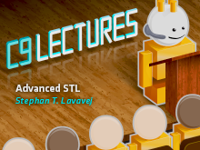
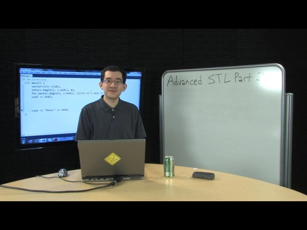
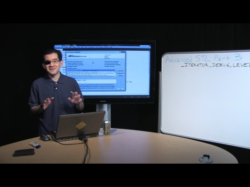
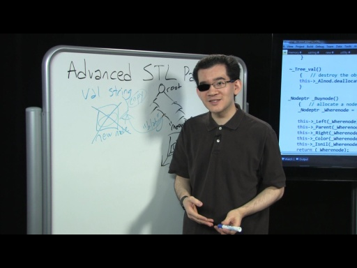
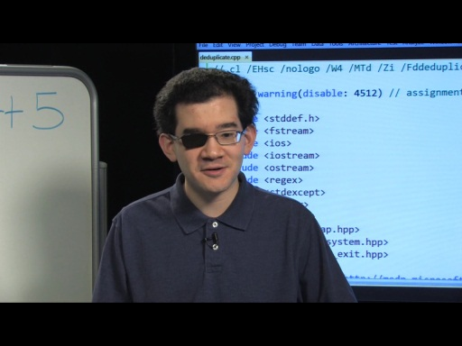
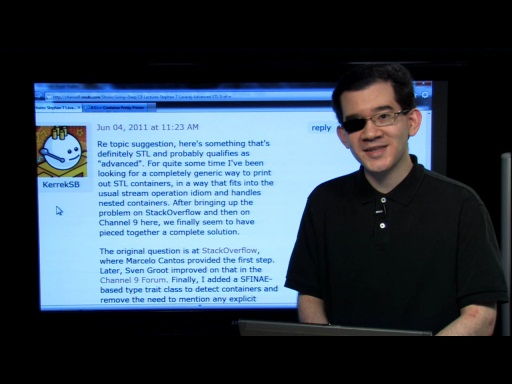

Series - C9 Lectures: Stephan T Lavavej - Advanced STL
Series - C9 Lectures: Stephan T Lavavej - Advanced STL
As promised, the great Stephan T. Lavavej is back! Tens of thousands of you have watched STL's (those are his initials, so that's what we call him) introductory series on the STL, or Standard Templa…
C9 Lectures: Stephan T Lavavej - Advanced STL, 1 of n [2011/02/11]
As promised, the great Stephan T. Lavavej is back! Tens of thousands of you have watched STL's (those are his initials, so that's what we call him) introductory series on the STL, or Standard Templa…
C9 Lectures: Stephan T Lavavej - Advanced STL, 2 of n [2011/03/04]As promised, the great Stephan T. Lavavej is back! Tens of thousands of you have watched STL's (those are his initials, so that's what we call him) introductory series on the STL, or Standard Templa…
C9 Lectures: Stephan T Lavavej - Advanced STL, 3 of n [2011/03/30]Many thousands of you have watched Stephan T. Lavavej's great introductory series on the STL on Channel 9. If you haven't, then you should. There are two STLs: the Standard Template Library and Stepha…
C9 Lectures: Stephan T Lavavej - Advanced STL, 4 of n [2011/04/28]There are two STLs: the Standard Template Library and Stephan T. Lavavej Advanced STL covers the gory details of the STL's implementation -> you will therefore need to be versed in the basics of S…
C9 Lectures: Stephan T Lavavej - Advanced STL, 5 of n [2011/05/20]There are two STLs: the Standard Template Library and Stephan T. Lavavej Advanced STL covers the gory details of the STL's implementation -> you will therefore need to be versed in the basics of S…
C9 Lectures: Stephan T Lavavej - Advanced STL, 6 of 6 [2011/07/12]There are two STLs: the Standard Template Library and Stephan T. Lavavej Advanced STL covers the gory details of the STL's implementation -> you will therefore need to be versed in the basics of S…